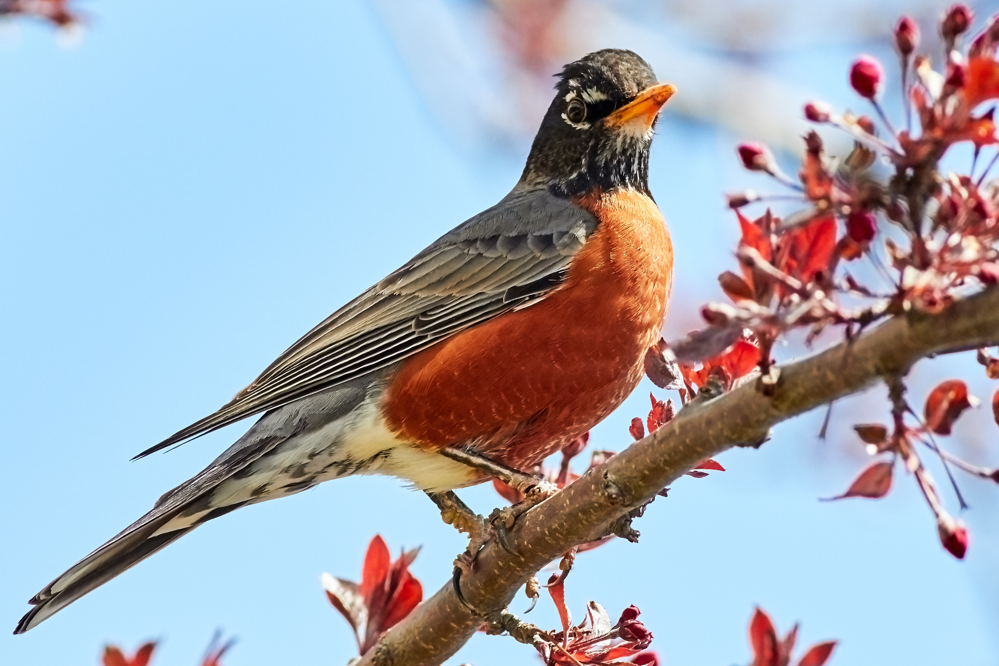
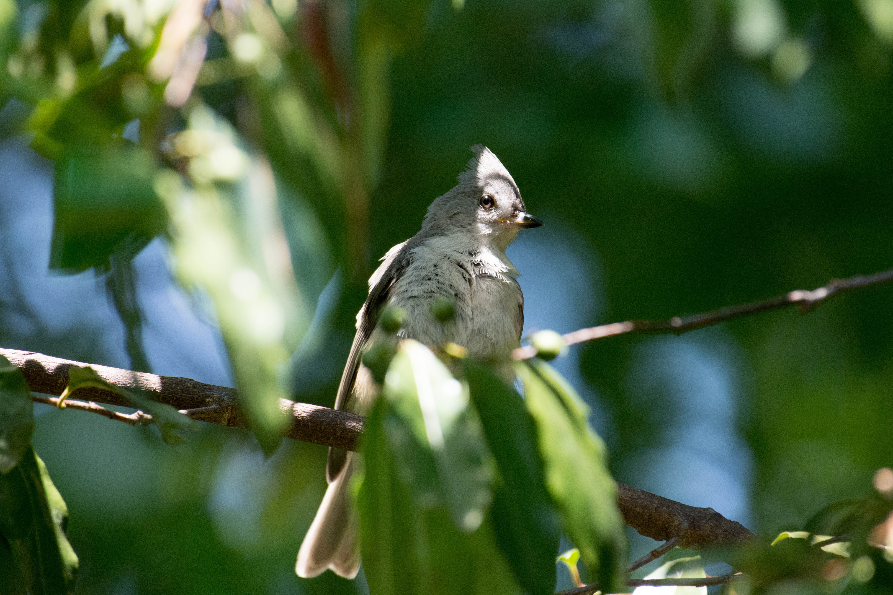
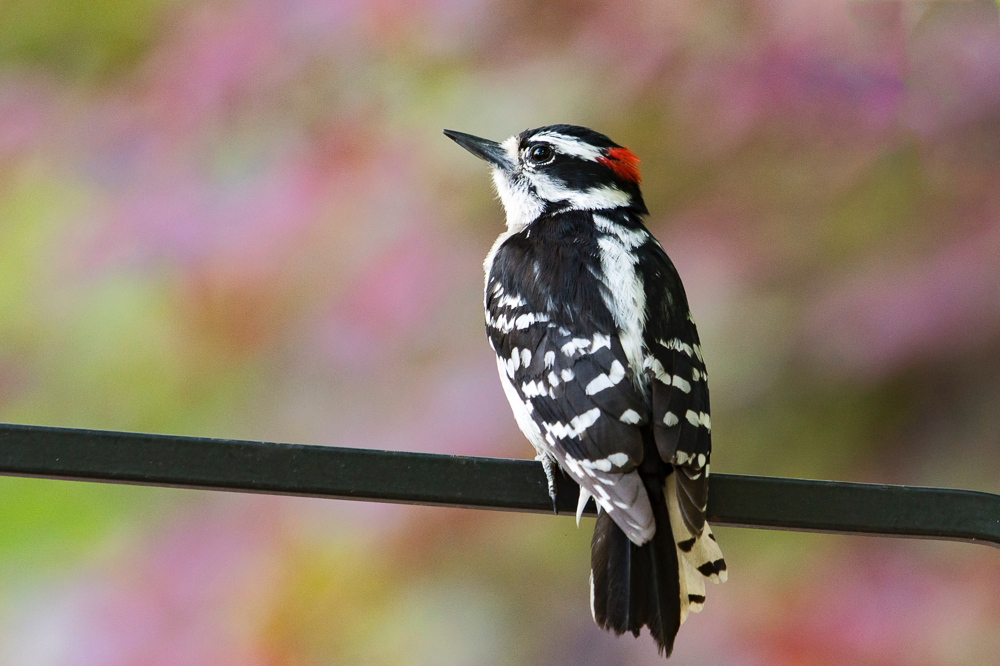

National Audobon Society
The National Audubon Society is a non-profit environmental organization dedicated to conservation. Located in the United States and incorporated in 1905, Audubon is one of the oldest of such organizations in the world and uses science, education and grassroots advocacy to advance its conservation mission.
2019 QBG Bird Walks with NYC Audubon
In this special series with NYC Audubon, spot and identify creatures of flight and learn how QBG provides important resources for birds—like water, shelter, and insects to eat.
Cape May Bird Observatory
Funded almost entirely by the support of an international membership, two facilities serve our members’ needs and interests.
There are few places in North America which have been birded longer or have more birding advocates than Cape May, New Jersey, one of the planet’s most celebrated migratory junctions.

The quintessential early bird, American Robins are common sights on lawns across North America, where you often see them tugging earthworms out of the ground. Robins are popular birds for their warm orange breast, cheery song, and early appearance at the end of winter.
American Robin

Tufted Titmice look large among the small birds that come to feeders, an impression that comes from their large head and eye, thick neck, and full bodies.
Tufted Titmouse

An important part of the ecosystem, woodpeckers help control insect populations and create nest cavities that are used by other birds and mammals who cannot excavate the cavities themselves. Nuthatches, screech owls, kestrels, starlings, squirrels, flying squirrels, deer mice, and raccoons all use woodpecker tree cavities.
Downy Woodpecker